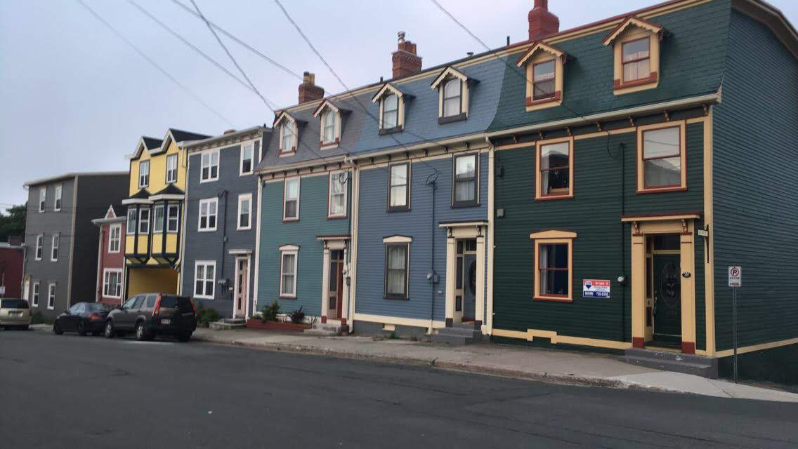
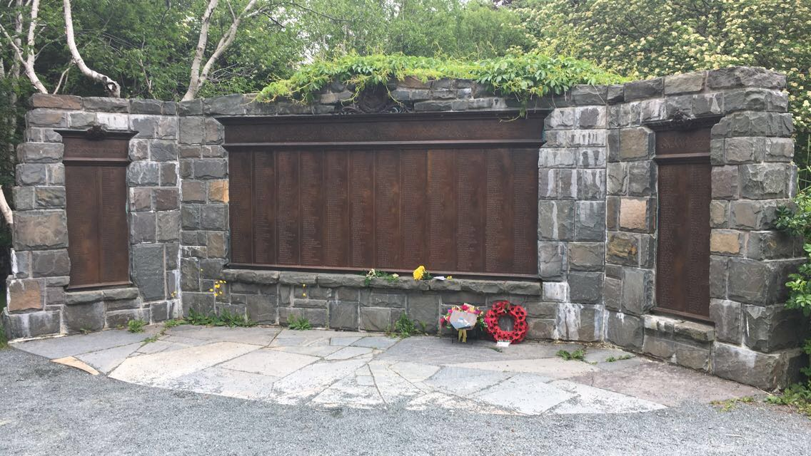
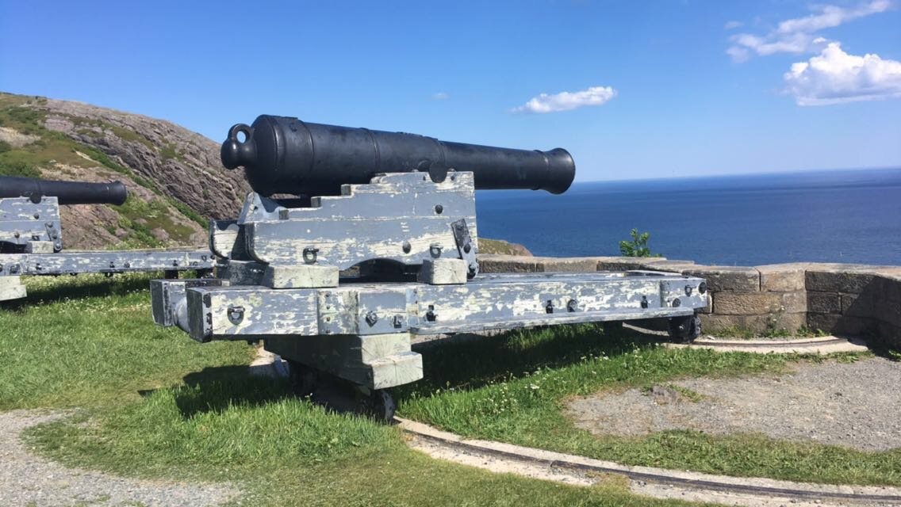
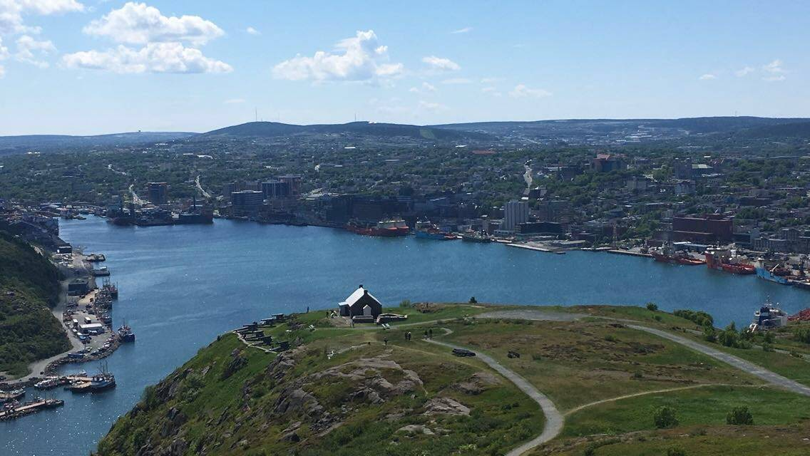
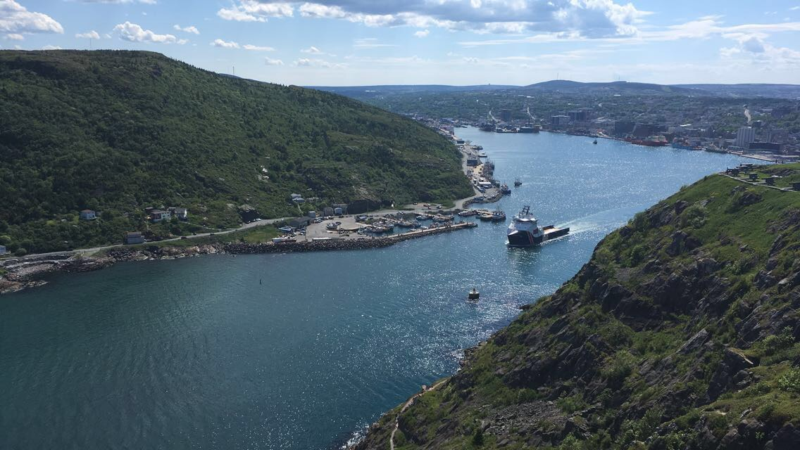

Victor's Vacation to St. John's, Newfoundland

St. Johns, NL - Townhouses
St. Johns, NL - The Lighthouse in Cape Spear

St. Johns, NL - A War Memorial in Bowring Park

St. Johns, NL - Cannon Atop Signal Hill

St. Johns, NL - View of the Bay From Signal

St. Johns, NL - A Small Tugboat Leaving the Bay